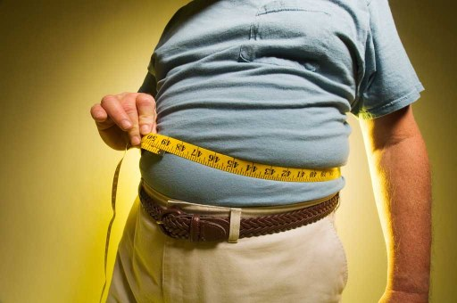
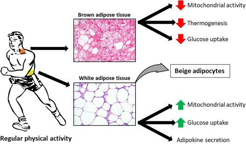

Obezitenin Metabolik Komplikasyonları: Vücut Yağ Dağılımının Rolü Nedir?
Obezite küresel bir salgın olmaya devam ediyor. Dünya Sağlık Örgütü'ne göre 2016 yılında 1,9 milyardan fazla yetişkin aşırı kilolu ve 650 milyonu da obezite hastasıydı (vücut kitle indeksi [BMI] > 30). Obezite , tip 2 diyabet, kardiyovasküler hastalık (CVD), hareketlilik sorunları ve belirli kanser türleri (örneğin, yemek borusu adenokarsinomu, menopoz sonrası meme, kolon, rektum) riskinin artmasıyla ilişkilendirilmiştir. Dengesiz enerji alımı , genetik, çevresel, sosyoekonomik, psikolojik ve davranışsal etiyolojinin altında yatan faktörlerle birlikte obezitenin temel nedenidir . Obezitede morfolojik yağ dağılımı farklılık gösterir. Burada farklı obezite türlerini ve yağ dokusunu, açlık yollarındaki bozulmanın enerji dengesini nasıl etkilediğini ve obeziteyi etkileyen faktörleri tartışıyoruz.
Merkezi Obezite
Visseral veya abdominal obezite olarak da adlandırılan merkezi obezite , karın bölgesi çevresinde aşırı yağ birikmesidir. Bu tür obezite, başta tip 2 diyabet ve KVH olmak üzere sağlık sorunları açısından daha yüksek riskle ilişkilidir . Santral obezite erkeklerde kadınlardan daha yaygındır ve stres ve kötü yaşam tarzı seçimlerinin yanı sıra özellikle hormonal dengesizlik (örneğin Cushing sendromunda görülen hiperkortizolizm ) gibi çok sayıda faktörden kaynaklanabilir . Merkezi ağırlık dağılımı özellikle endişe vericidir çünkü yağ iç organların etrafında birikmektedir ve metabolik olarak aktiftir, bu da insülin direnci ve metabolik sendromda görülen diğer sekel riskini artırmaktadır
Jinoid Obezite
Armut tipi obezite olarak da bilinen jinoid obezite, kalça, uyluk ve kalça çevresinde yağ birikmesini ifade eder. Adından da anlaşılacağı üzere jinoid obezite kadınlarda daha sık görülmektedir . Jinoid obezitede bazı genetik ve hormonal faktörler yağ dağılımını etkiler. Jinoid obezite, diğer obezite türleriyle karşılaştırıldığında KVH ve diğer hastalıkların gelişme riskinin daha düşük olmasına rağmen , yine de inflamatuar durumlar ve ateroskleroz için bir risk faktörü olabilir .
Android Obezite
Elma tipi obezite olarak da adlandırılan android obezitesinde yağ, vücudun üst kısmında, özellikle de karın, göğüs bölgesi ve üst ekstremite çevresinde birikme eğilimindedir. Android obezitesi merkezi obezite ile karıştırılabilir çünkü bu türler benzer epidemiyolojik ve risk faktörü profillerine sahiptir; erkeklerde görülme sıklığındaki artış ve tip 2 diyabet ve KVH gelişme riskindeki artış da buna dahildir.
Sarkopenik Obezite
Düşük kas kütlesi ve yüksek vücut yağıyla karakterize edilen sarkopenik obezite , genellikle yaşlı insanlarda görülür. Çalışmalar, yaşla birlikte kas kütlesi kaybının hızlandığını ve insülin direncinin kötüleştiğini , bunun da vücut yağının artmasına yol açtığını göstermiştir . Aynı zamanda artan KVH ile ilişkili mortalite ve tüm nedenlere bağlı mortalite ile de ilişkilidir . Sarkopenik obezitede kas kütlesi kaybı aynı zamanda hareketliliği azaltır ve düşme ve kırık riskini artırır.
Obezite Tipini Belirlemek İçin Abdominal Yağlılığın Değerlendirilmesi
Basit ve az kullanılan bir araç olan bel çevresinin ölçülmesiyle obezite tipi belirlenebilmektedir . Ulusal Sağlık Enstitüleri kriterlerine göre, kadınlarda > 35 inç ve erkeklerde > 40 inç bel çevresi genellikle merkezi obeziteyi düşündürür . Bel çevresi ölçümleri kişinin BMI ve vücut yağ yüzdesi ile birlikte kullanılmalıdır. Vücudun kas, su ve yağ bileşimi , çift enerjili x-ışını absorpsiyometrisi veya biyoelektrik empedans analizi kullanılarak belirlenebilir . Dünya Sağlık Örgütü kriterlerine göre bel çevresinin erkeklerde ≥ 94 cm, kadınlarda ≥ 80 cm olması santral obezite olarak tanımlanıyor.
Yağ Dokusu Türü: WAT ve BAT
Adipoz dokudaki iki ana yağ türünün her biri, beyaz adipoz yağ (WAT) ve kahverengi adipoz doku (BAT), farklı bir morfolojiye ve fonksiyona sahiptir. Yetişkinlerde en çok bulunan tür olan WAT, izolasyon sağlar ve enerjiyi trigliserit olarak depolar . Mikroskop altında WAT, tüm hücre içeriğini çevreye "iten" bir yağ damlacığı olarak görünebilir . Buna karşılık BAT, bir hücre içinde çok sayıda, daha küçük yağ damlacıkları olarak görünür . WAT'ın aksine BAT metabolik olarak aktif ve termojeniktir , bu nedenle çoğunlukla gövde bölgesinde yoğunlaşır . Yeni doğanlarda BAT vücut kütlesinin yaklaşık %5'ini oluşturur , ancak insanlar yaşlandıkça daha fazla WAT biriktirir. Beyaz yağ dokusunda WAT ve BAT'a ek olarak bej yağ hücreleri de bulunur ve WAT ve BAT'a benzer işlevler gerçekleştirir. Aslında bej yağ hücreleri daha çok WAT gibi davranır; ancak soğuk sıcaklıklara maruz kaldıklarında BAT gibi işlev görür ve ısıyı dağıtırlar. Kişide obezite geliştikçe ve zamanla yaşlandıkça, WAT içeriği artarken BAT ve bej içeriği azalır; bu sürece "beyazlatma" adı verilir. Obezitenin etkilerini daha iyi açıklamak için pek çok araştırma devam etmektedir.
Yağ hücreleri geç çocukluk, ergenlik ve bir dereceye kadar yetişkinlik döneminde hızla artar . BAT aktivitesi ergenlik ve ergenlik yıllarında artar, bu da daha düşük yağlanma ve vücut ağırlığı artışına karşılık gelir. Yetişkinlikte yağ dokusunun birikmesi (örneğin, yaşlanma, hamilelik ), hipertrofik obezite , genellikle yağ hücrelerinin boyutunda bir artışa karşı hücre sayısındaki bir artışla ilişkilidir.
Açlık Yolları ve Enerji Dengesi
Merkezi sinir sistemi boyunca çeşitli iç yollar ve periferik yollar enerji harcamasını kontrol eder . Beyinde açlığı yöneten iki ana yol homeostatik ve hedonik yoldur. Homeostatik yol (yani biyolojik açlık yolu ), metabolik açlığa sinyal göndererek enerji dengesini kontrol ederken hedonik yol, yemeyle ilişkili zevk ve ödül duygusuyla doğrudan ilişkilidir. Hedonik yol, homeostatik yolu geçersiz kıldığında, açlığın olmadığı durumlarda bile gıda tüketimini tetikleyebilir (örneğin, stresle aşırı yeme dönemleri) ve bu da obeziteye yol açabilir. Hipotalamik obezite, felç, travma veya diğer hastalık süreçleri nedeniyle hipotalamusta meydana gelen hasardan kaynaklanır ve enerji dengesi ve homeostazisin bozulmasıyla karakterize edilir.
Obeziteyi Etkileyen Faktörler
Çoğu obezite türünün etiyolojisi genetik, davranış kalıpları ve sosyoekonomik durumdan etkilenmesine rağmen , diğer dış faktörler de homeostatik ve hedonik yolları etkileyebilir . Bazı ilaçlar (örneğin steroidler ve bazı antipsikotik, antidepresan ve antiretroviral ilaçlar ) vücuttaki enerji dengesini bozabilir ve merkezi obeziteye neden olabilir . Ayrıca Cushing hastalığı , tip 2 diyabet ve büyüme hormonu eksiklikleri gibi endokrin bozuklukları da insanları obeziteye yatkın hale getiriyor. MCR4 mutasyonları, leptin reseptör mutasyonları, kromozomal anormallikler (örneğin Prader-Willi Sendromu ) ve çocukluk çağı genetik bozuklukları (örneğin Bardet-Biedl Sendromu ) gibi belirli genetik mutasyonlar ve sendromlar da yeme alışkanlığının artmasına ve obeziteye neden olabilir . Bu koşulların her biri erken çocukluk döneminde başlayan ve hızlı obeziteye neden olabilir ve aile öyküsü ve entelektüel zorlukların varlığıyla ilişkilendirilebilir . Bu nedenle obezitenin gelişimi kişiye bağlı değildir; daha çok beynin merkezi enerji devresini etkileyen çok sayıda karmaşık, birbiriyle etkileşimli faktöre bağlıdır.